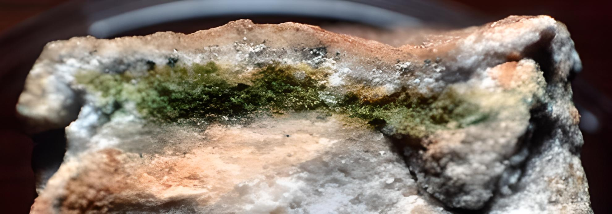

Endolitia
Un copiotrofo es un organismo que se encuentra en ambientes ricos en nutrientes, particularmente carbono. Son lo opuesto a los oligótrofos, que sobreviven en concentraciones de carbono mucho más bajas.